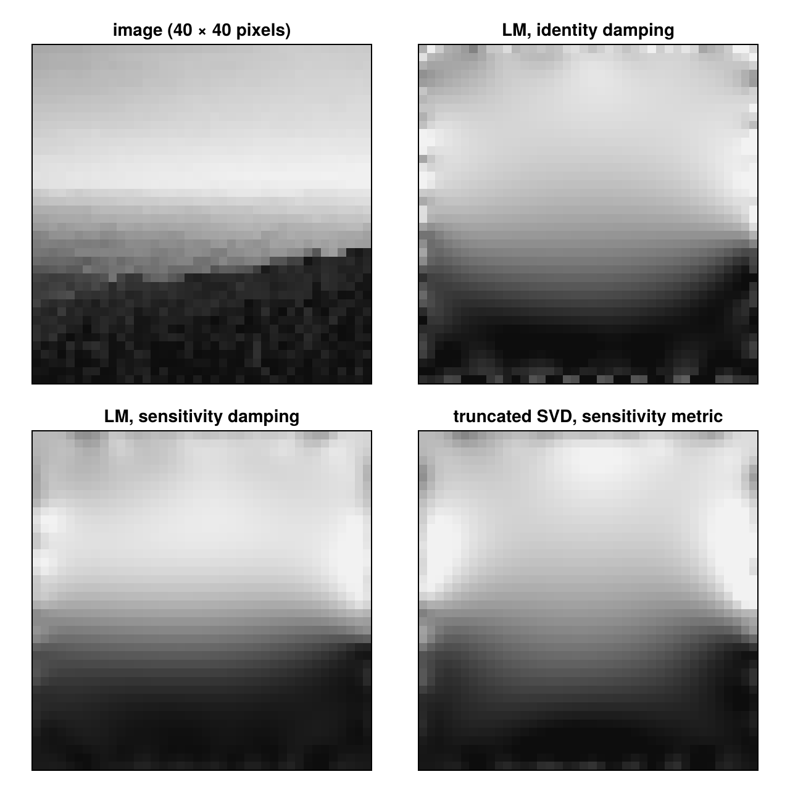
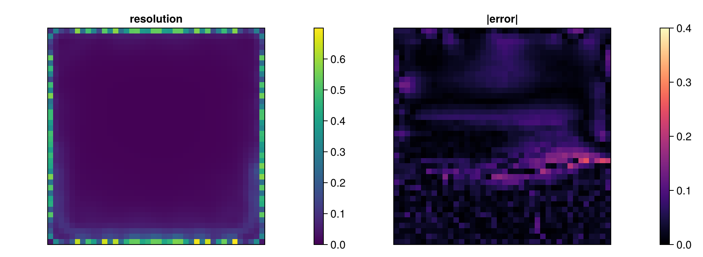

Showcase: a landscape as conductivity
Most EIT reconstructions are demonstrated on a few circles or ellipses in a homogeneous background. This tutorial reconstructs a photograph instead: a mountain landscape (bright sky, a hazy horizon, a dark forested ridge), taken as the conductivity of the unit square and measured with 32 electrodes. It has no homogeneous background and structure at every scale, which makes it a hard test.
The pipeline:
- data from a fine mesh, reconstruction on a coarser mesh refined towards the boundary;
- the unknowns are the pixels of an image, independent of the mesh;
- the boundary data are rotated into their singular patterns and truncated at the noise level;
- Levenberg–Marquardt with damping by the sensitivities, stopped by the discrepancy principle;
- a map of what the data determine.
Steps 2 and 4 decide the quality: the pixels must be aligned with the mesh, and the damping must not be the identity. Otherwise periodic artefacts appear along the boundary, with the period of the electrodes.
This page is generated from examples/showcase_landscape.jl and is also available as a Jupyter notebook.
using ModularEIT, Ferrite, Random, LinearAlgebra
using CairoMakieThe image
150 × 150 pixels of 8-bit grey values, stored as raw bytes, mapped to conductivities between 0.2 (dark) and 1 (bright) by image_phantom. The phantom is a function of the position, independent of any mesh.
bytes = read(pkgdir(ModularEIT, "examples", "data", "1096.u8"))
img = permutedims(reshape(Float64.(bytes) ./ 255, 150, 150)) # row 1 at the top
phantom = image_phantom(img, 0.2, 1.0);Meshes, electrodes, data
The reconstruction mesh has 40 × 40 squares, and the two layers of cells along the boundary are refined twice (hanging nodes, AdaptiveMesh). The data come from a separate 150 × 150 mesh, on which the image is exactly piecewise constant. The electrodes are the same physical electrodes on both meshes (transfer_electrodes). There are 30 trigonometric current patterns and 1 % relative noise.
am = AdaptiveMesh(generate_grid(Quadrilateral, (40, 40)))
for _ in 1:2
g = current_grid(am)
near_boundary = [i for i in 1:getncells(g)
if maximum(maximum(abs.(g.nodes[n].x)) for n in g.cells[i].nodes) > 0.9 + 1e-12]
refine_mesh!(am, near_boundary)
end
disc = FerriteDiscretization(current_grid(am))
electrodes = angular_electrodes(disc, 32; coverage = 0.5)
fm = ForwardModel(disc, CompleteElectrodeModel(electrodes, 0.05))
fine = FerriteDiscretization(generate_grid(Quadrilateral, (150, 150)))
fm_fine = ForwardModel(fine, CompleteElectrodeModel(transfer_electrodes(disc, electrodes, fine), 0.05))
currents = trigonometric_patterns(fm, 15)
noise = RelativeGaussianNoise(0.01)
sim = simulate_data(fine, fm_fine, phantom, currents; noise, rng = MersenneTwister(1096))
(cells = getncells(disc.grid), data = size(sim.data))(cells = 6580, data = (32, 30))Pixels as unknowns
The unknowns are 40 × 40 pixels (PixelParametrization). The conductivity on every cell is the average of the pixels it overlaps. With 40 × 40 pixels on the 40 × 40 base mesh, every cell, including the refined ones, lies inside a single pixel, and the map is exact. Pixels that do not align with the cells, for example 50 × 50 here, are covered by one or two cells in a periodic pattern. Their sensitivities alternate, and every reconstruction prints that moiré pattern.
pp = PixelParametrization(disc, 40, 40)
truth = [phantom(c) for c in pp.centres]
data = AdjointStateObjective(fm, currents, sim.data)
obj = ParametrizedObjective(data, pp)
target = discrepancy_target(data, noise);A helper that plots pixel vectors:
function show_pixels!(pos, θ, title; colormap = :grays, colorrange = (0.2, 1.0))
ax = Axis(pos; title, aspect = DataAspect())
hidedecorations!(ax)
return heatmap!(ax, permutedims(reverse(pixel_image(pp, θ); dims = 1)); colormap, colorrange)
end
relerr(θ) = norm(θ - truth) / norm(truth .- sum(truth) / length(truth));A reference and the distinguishable patterns
The best constant conductivity is a one-parameter fit (SubspaceParametrization with a single constant mode):
constant = SubspaceParametrization(pp, ones(parameter_count(pp), 1))
c0 = minimize(ParametrizedObjective(data, constant), [0.5], GaussNewton()).σ[1]0.4784511331217592The singular value decomposition of the difference between the data and the reference rotates the 30 measured pairs into patterns ordered by how well they distinguish the image from the constant (pattern_svd). It also returns the noise level of every rotated pattern:
p = pattern_svd(disc, fm, currents, sim.data; metric = :L2, noise, reference = fill(c0, ndofs_σ(disc)))
round.(p.values ./ p.noise_levels; sigdigits = 2)30-element Vector{Float64}:
72.0
45.0
73.0
35.0
34.0
64.0
66.0
38.0
34.0
60.0
⋮
25.0
23.0
25.0
23.0
22.0
24.0
17.0
8.9
5.3All 30 patterns lie well above the noise, so truncate_patterns keeps them all. The landscape differs so much from a constant that no pattern is pure noise. With smaller contrast, more noise or more patterns, the trailing ones would drop out. The retained pairs t.currents, t.voltages and their noise model t.noise would replace the original data:
t = truncate_patterns(p)
size(t.currents, 2)30Levenberg–Marquardt: the damping decides
Near the electrode edges the current density is singular, so the pixels under the electrodes and in the gaps are by far the most sensitive. Damping with the identity lets the steps concentrate there and produces the periodic artefact along the boundary. Damping with the sensitivities $\operatorname{diag}\lVert J e_j\rVert$ (scaling = :sensitivity), the geometric mean of the identity and Marquardt's $\operatorname{diag}(J^\top J)$, evens this out. Both stop at the noise level (discrepancy principle); no other regularization is used.
θ0 = fill(c0, parameter_count(pp))
lm_id = minimize(obj, θ0, GaussNewton(); lower = 0.05, maxiter = 40, ftarget = target)
lm_s = minimize(obj, θ0, GaussNewton(; scaling = :sensitivity); lower = 0.05, maxiter = 40, ftarget = target)
tsvd = minimize(obj, θ0, TruncatedGaussNewton(; rtol = 0.1, weights = :sensitivity); lower = 0.05,
maxiter = 40, ftarget = target)
(constant = relerr(θ0), identity = relerr(lm_id.σ), sensitivity = relerr(lm_s.σ), truncated_svd = relerr(tsvd.σ))(constant = 1.147636498414472, identity = 0.2572536295130358, sensitivity = 0.1667129881032247, truncated_svd = 0.2803655393292542)fig = Figure(size = (640, 640))
show_pixels!(fig[1, 1], truth, "image (40 × 40 pixels)")
show_pixels!(fig[1, 2], lm_id.σ, "LM, identity damping")
show_pixels!(fig[2, 1], lm_s.σ, "LM, sensitivity damping")
show_pixels!(fig[2, 2], tsvd.σ, "truncated SVD, sensitivity metric")
fig
With sensitivity damping the sky, the height of the horizon and the dark lower third are recovered, without the electrode pattern. The truncated SVD in the same metric is also free of artefacts, but blurrier, and levels off above the noise level. The diagonal ridge and the texture of the forest are lost. They lie beyond what 32 electrodes resolve at 1 % noise.
What the data determine
The diagonal of the model resolution matrix (resolution_map, 1 = determined by the data, 0 = left to the initial guess), from the Jacobian's SVD at the reconstruction, and the pixel error:
R = resolution_map(jacobian_svd(obj, lm_s.σ); rtol = 1e-2)
fig2 = Figure(size = (900, 330))
hm = show_pixels!(fig2[1, 1], R, "resolution"; colormap = :viridis, colorrange = (0, 0.7))
Colorbar(fig2[1, 2], hm)
hm2 = show_pixels!(fig2[1, 3], abs.(lm_s.σ - truth), "|error|"; colormap = :magma, colorrange = (0, 0.4))
Colorbar(fig2[1, 4], hm2)
fig2
The data determine single pixels only along the boundary. Inside, they determine only smooth combinations of pixels, so the fine structure there, where the error concentrates (the edge of the ridge), comes from the prior and not from the data. This is the division of labour for a learned prior: keep the boundary ring, which the data fix, and let the prior fill in the interior (see Resolution and Confidence Maps).